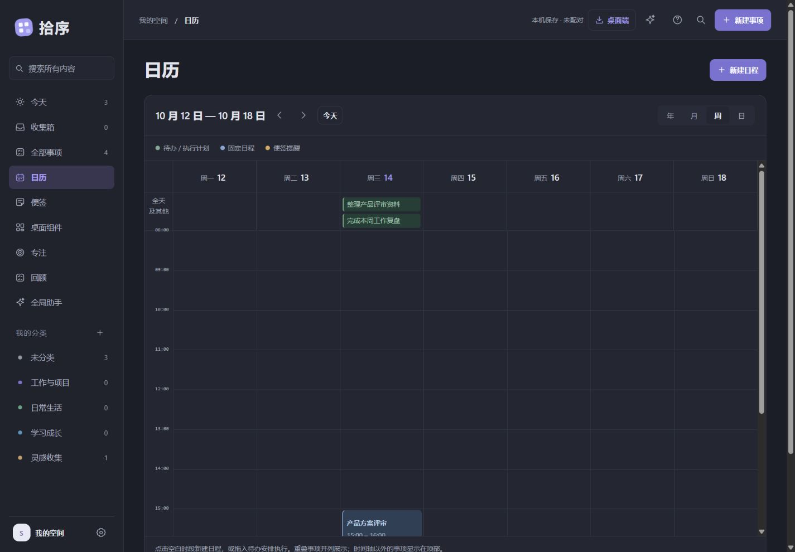
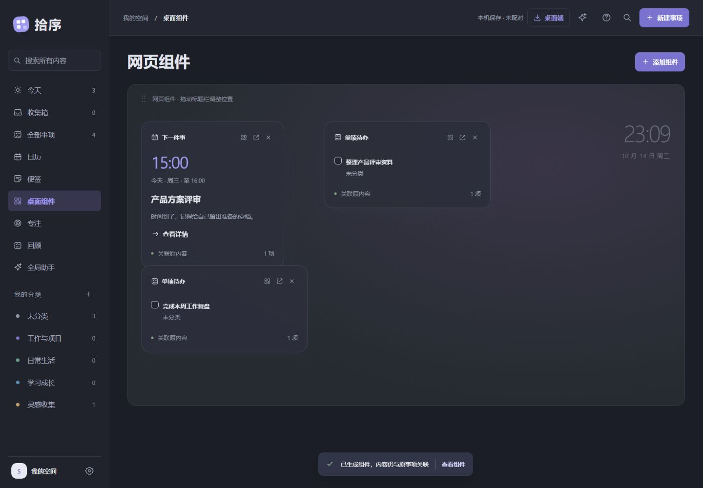
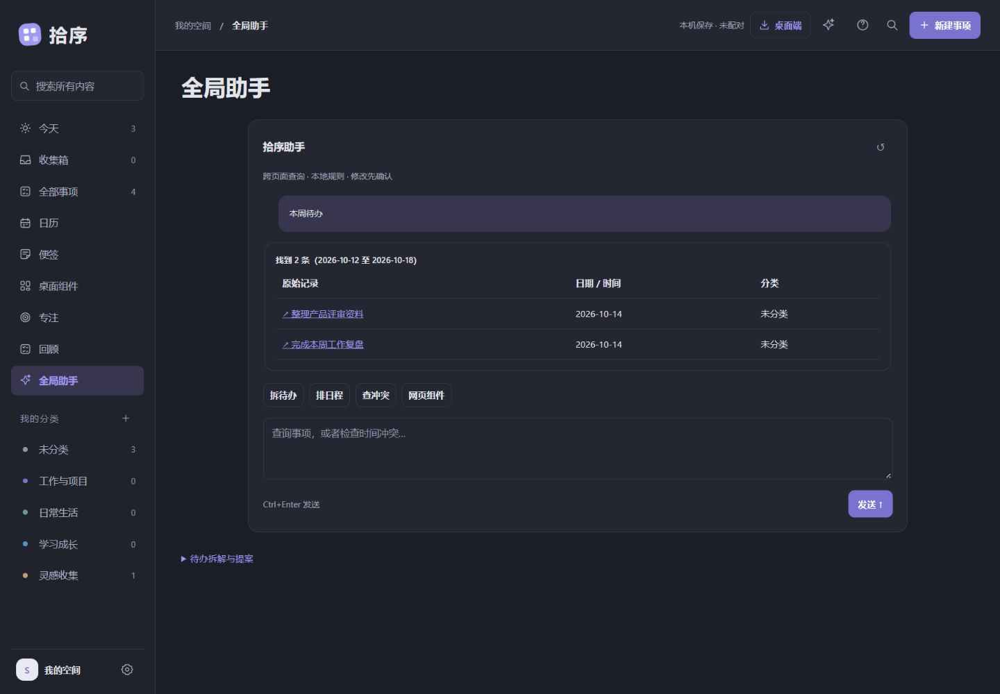
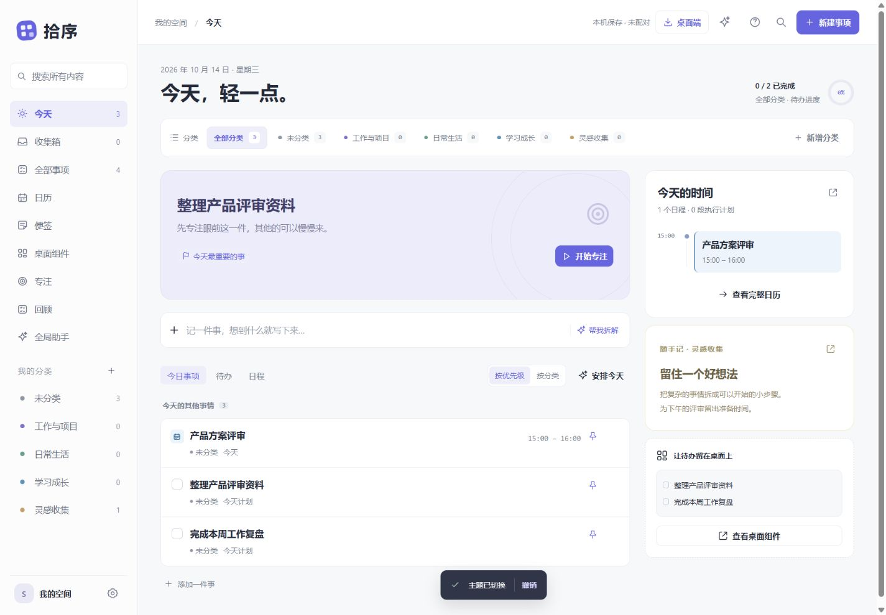

先记下来。
再慢慢理清。
随手记录一条待办，留住一张便签。分类和小步骤，让想法变成可以开始的事。

随手记录一条待办，留住一张便签。分类和小步骤，让想法变成可以开始的事。
在年、月、周、日视图之间切换。计划时间、截止日期、提醒各自独立，安排更清楚。

Windows 端把待办、事件和分类变成独立组件。回到工作时，重要的事仍在眼前。

查询事项、拆解待办、排期和检查冲突。回复链接回到原始记录，更改先预览，再确认。

在电脑上专注，在浏览器里继续。登录后，事项与分类在你的设备之间加密同步。

想先体验记录和日历，可以直接打开网页端。希望使用原生桌面组件、托盘提醒和自动更新，下载 Windows 版后解压，运行 Shixu.App.exe。
需要先配对。在桌面设置中建立私有空间并复制账户，再到网页设置中连接。登录后自动同步事项和分类；账户只保存在自己的设备上。
基础查询、明确记录和本地规则排期不需要 API。桌面端更复杂的云模型能力需要在设置中配置模型和有效密钥，模型费用由所选服务决定。网页端目前使用本地规则助手。
网页提醒需要页面保持打开。需要托盘提醒时使用 Windows 版；完全退出应用或设备休眠期间也不保证通知送达。
从记下一件事开始。